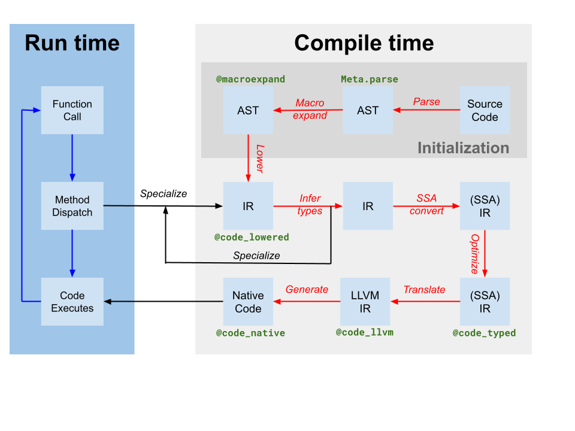

Eval of Julia code
Julia言語がコードをどのように実行するかを学ぶうえで、特に難しいのは、コードのブロックを実行するために、さまざまな要素がどのように連携するかを理解することです。
コードの各断片は通常、実行結果（期待どおりの結果になることを願いつつ）に至るまでに、なじみのない名前が付いた多くの段階を経ます。順不同で挙げると、flisp、AST、C++、LLVM、eval、typeinf、macroexpand、sysimg（またはシステムイメージ）、ブートストラップ、コンパイル、パース、実行、JIT、インタープリート、ボックス化、アンボックス化、組み込み関数、プリミティブ関数などです。

Julia Execution
処理全体を大まかに見ると、次のようになります。
- ユーザーが
juliaを起動します。 cli/loader_exe.cにあるC関数main()が呼び出されます。この関数はコマンドライン引数を処理し、jl_options構造体に値を設定するとともに、変数ARGSを設定します。続いて、julia_initininit.cを呼び出してJuliaを初期化します（このとき、以前にコンパイルされたsysimgが読み込まれる場合があります）。最後に、Base._start()を呼び出して、制御をJuliaに渡します。_start()が制御を引き継ぐと、その後の処理はコマンドライン引数によって異なります。たとえば、ファイル名が指定されていれば、そのファイルの実行に進みます。指定されていなければ、対話型REPLを起動します。- REPLがユーザーとやり取りする仕組みの詳細は省きますが、最終的には実行対象のコードブロックが用意されます。
- 実行するコードブロックがファイル内にある場合は、
jl_load(char *filename)が呼び出されてファイルが読み込まれ、parseされます。その後、コードの各断片がevalに渡され、実行されます。 - コードの各断片（またはAST）は、結果を得るために
eval()へ渡されます。 eval()は、各コード断片をjl_toplevel_eval_flex()で実行しようとします。jl_toplevel_eval_flex()は、そのコードがusingやmoduleのような「トップレベル」の処理かどうかを判定します。こうした処理は関数内では無効です。該当する場合、コードはトップレベルインタープリターに渡されます。- 次に
jl_toplevel_eval_flex()がコードをexpandsし、マクロをすべて展開するとともに、ASTを「lower」して実行しやすい形にします。 - 次に
jl_toplevel_eval_flex()が簡単なヒューリスティックを使い、ASTをJITコンパイルするか、そのまま直接インタープリートするかを判断します。 - コードのインタープリート処理の大部分は、
evalininterpreter.cが担います。 - 一方、コードをコンパイルする場合、処理の大部分は
codegen.cppが担います。Juliaの関数が、ある引数型の組み合わせで初めて呼び出されるたびに、その関数に対してtype inferenceが実行されます。この情報は、codegenの段階で、より高速なコードを生成するために使われます。 - やがてユーザーがREPLを終了するか、プログラムの末尾に到達すると、
_start()メソッドが戻ります。 - 終了直前に、
main()がjl_atexit_hook(exit_code)を呼び出します。これはBase._atexit()を呼び出し（Julia内でatexit()に登録された関数があれば、それらも呼び出します）、続いてjl_gc_run_all_finalizers()を呼び出します。最後に、すべてのlibuvハンドルを適切にクリーンアップし、フラッシュされて閉じられるのを待ちます。
Parsing
デフォルトでは、JuliaはJuliaSyntax.jlを使ってASTを生成します。以前は、femtolispで書かれた小さなLispプログラムを使っていました。そのソースコードはJuliaのsrc/flispに含まれています。環境変数JULIA_USE_FLISP_PARSERに1が設定されている場合は、代わりに旧パーサーが使われます。
Macro Expansion
eval()はマクロに遭遇すると、式の評価を試みる前に、そのASTノードを展開します。マクロ展開では、Julia内のeval()から、flispで書かれたパーサー関数jl_macroexpand()へ、さらにfl_invoke_julia_macro()を介してJuliaのマクロ本体（もちろんJuliaで書かれています）へと処理が渡され、再び戻ってきます。
通常、マクロ展開はMeta.lower()/Core._lower()の呼び出し時に最初の段階として行われますが、macroexpand()/jl_macroexpand()を直接呼び出して実行することもできます。
Type Inference
Juliaの型推論はtypeinf() in compiler/typeinfer.jlによって実装されています。型推論とは、Juliaの関数を調べ、各変数の型の上限と下限、および関数の戻り値の型の上限と下限を特定する処理です。これにより、既知の不変値のアンボックス化や、フィールドオフセットや関数ポインターの計算といった実行時処理のコンパイル時への繰り上げなど、さまざまな最適化が可能になります。型推論には、定数伝播やインライン化など、ほかの処理が含まれる場合もあります。
JIT Code Generation
コード生成とは、JuliaのASTをネイティブマシンコードに変換する処理です。
JIT環境は、初期段階でjl_init_codegen in codegen.cppを呼び出して初期化されます。
必要に応じて、関数emit_function(jl_method_instance_t*)がJuliaのメソッドをネイティブ関数に変換します（注：MCJIT（LLVM v3.4以降）を使う場合、関数ごとに新しいモジュールへJITコンパイルする必要があります）。この関数は、関数全体の出力が完了するまでemit_expr()を再帰的に呼び出します。
このファイルの残りの大部分は、特定のコードパターンに対するさまざまな手動最適化に充てられています。たとえば、emit_known_call()は、さまざまな引数型の組み合わせに対して、builtins.cで定義されている多くのプリミティブ関数をインライン化できます。
コード生成のほかの部分は、次のような各種ヘルパーファイルが担当します。
JIT関数のバックトレースを処理します。
ccallおよびllvmcallのFFIと、各種
abi_*.cppファイルを処理します。さまざまな低水準組み込み関数の出力を処理します。
System Image
システムイメージは、Juliaのファイル群を事前コンパイルしてまとめたアーカイブです。Juliaに同梱されているsys.jiファイルもその一つで、sysimg.jlファイルを実行し、その結果の環境（型、関数、モジュール、その他定義されたすべての値を含む）をシリアライズしてファイルに保存することで生成されます。そのため、ブートストラップ終了時の環境に含まれていたMain、Core、Baseモジュール（およびその他の要素）の固定された状態が含まれています。このシリアライザー／デシリアライザーはjl_save_system_image/jl_restore_system_image in staticdata.cによって実装されています。
sysimgファイル（jl_options.image_file == NULL）が存在しない場合、コマンドラインで--buildが指定されたことも意味します。そのため、最終的には新しいsysimgファイルが作成されるはずです。Juliaの初期化中に、最小限のCoreモジュールとMainモジュールが作成されます。次に、カレントディレクトリにあるboot.jlという名前のファイルが評価されます。その後、コマンドライン引数で指定されたファイルがあれば、末尾に達するまで順に評価されます。最後に、生成された環境が「sysimg」ファイルに保存され、次回Juliaを起動するときの初期状態として使われます。